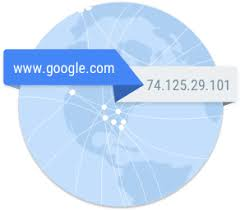

DNS — Реальные веб-адреса - неудобные, незапоминающиеся строки, которые Вы вводите в адресную строку, чтобы найти ваши любимые веб-сайты. Эти строки состоят из чисел, например: 63.245.215.20. Такой набор чисел называется IP-адресом и представляет собой уникальное местоположение в Интернете. Впрочем, его не очень легко запомнить, правда? Вот почему изобрели DNS. Это специальные сервера, которые связывают веб-адрес, который вы вводите в браузере (например, "google.com"), с реальным IP-адресом сайта. Сайты можно найти непосредственно через их IP-адреса. Попытайтесь зайти на сайт Mozilla, набрав 63.245.215.20 в адресной строке на новой вкладке браузера.
 google.com 8.8.8.8 Раньше чем мы начели продавать овощи